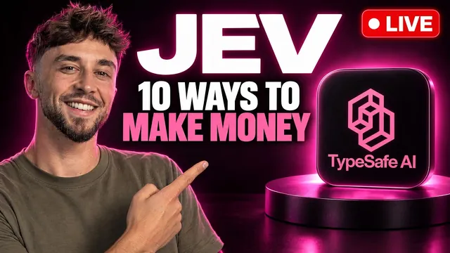

Jev로 돈 버는 방법 10가지, 라이브로 쪼개본다

원본 영상 보기 →
- '판단'이 공짜가 되면 가치는 데이터로 이동해요
- 샘플 검수에서 전수 검수로 넘어갑니다
- 고객은 기술 이름이 아니라 결과를 삽니다
한 줄 요약
Liam Ottley가 라이브 방송에서 Typesafe AI의 새 모델 Jev를 딥리서치로 해부하고, 이 모델로 돈 버는 방법을 정리했어요. 결론은 이렇습니다. Jev는 "글을 쓰는 모델이 아니라 판정하는 모델"이고, 기존 에이전시 상품을 더 싸게 바꾸는 것보다 데이터를 모으고 분류해 파는 사업에서 진짜 기회가 열립니다.
전체 내용 정리
Jev는 글을 못 씁니다, 판정만 해요
Jev는 Typesafe AI가 공개한 새로운 유형의 파운데이션 모델입니다.
창업자 디에고 알메이다(Diego Almeida)는 OpenAI에서 ChatGPT와 RLHF(인간 피드백 기반 강화학습)를 공동으로 만들었다고 소개해요. 그러면서 RLHF로 만든 LLM은 사람 취향에 최적화돼서 과신이나 신뢰성 부족 같은 문제가 있다고 주장합니다. 사람이 계속 붙어 있어야 하고, 그래서 자동화가 어렵다는 거죠.
Jev는 접근이 다릅니다. 단어를 한 글자씩 순서대로 생성하는 대신 여러 질문의 답을 병렬로 한 번에 계산하고, 문장 대신 선택지와 확률을 돌려줘요. 발표 내용은 기존 대비 100배 빠르고 100배 싸며, 입력 토큰은 10억 개당 42달러, 출력 토큰은 무료라는 겁니다. 방송 시점 기준 출시 12일 된 모델이에요.
Liam의 딥리서치 결과를 한 줄로 요약하면 이렇습니다. "Jev는 작가가 아니라 심판이다." 텍스트와 질문 목록을 보내면 약 0.3초 만에 각 선택지의 확률을 돌려주고, 글은 한 단어도 쓰지 못해요.
질문은 세 종류뿐이에요
- 목록에서 하나 고르기 — "이건 결제 문의인가?"
- 기준표로 점수 매기기 — "이 리드를 1~5점으로"
- 참/거짓 — "이 고객은 화났나?"
예를 들어 "3월 청구서가 두 번 결제됐다"는 상담 티켓이 들어오면, 분류(결제 문의)와 긴급도 점수, 이탈 위험 여부를 한 번에 확률과 함께 받습니다.
지금까지 기계에게 텍스트 판단을 시키는 방법은 두 가지였어요. LLM은 유연하지만 느리고 비싸고 출력 형식을 따로 검증해야 했고, 직접 학습시킨 분류기는 빠르고 거의 공짜지만 라벨 붙인 예시가 수천 개 필요했습니다.
Jev는 그 중간에 섭니다. LLM의 유연함(학습 불필요)과 분류기의 저렴함을 함께 가져와요. 결정적인 차이가 하나 더 있습니다. LLM은 질문 30개를 하면 그만큼 글을 더 써야 해서 비용이 늘지만, Jev는 질문 30개도 1개와 비용이 비슷합니다. 한 번 호출로 한 항목에 800개 질문을 할 수 있어요.
검증된 강점과, 과장된 부분
검증된 사례부터 볼게요. 마더덕(MotherDuck)이 10만 행을 40초 만에 50센트로 분류했고, 한 HubSpot 서비스 업체는 CRM 연락처 12만 개를 2시간 안에 5달러로 보강했습니다.
잘 맞는 용도는 대량 분류, 문의 분류·배정, 에이전트가 볼 메모리 선택, 샘플이 아닌 모든 AI 출력 검수, 대량 데이터 보강이에요.
한계도 분명합니다. 프런티어 모델보다 똑똑하지 않아서 어려운 판단에선 밀리고, 신뢰도 점수는 자기 데이터로 확인해야 해요(수백 개 예시 라벨링이 필요합니다). 기본 상태에선 가끔 자신 있게 틀리고, 정해진 선택지 밖의 답은 못 합니다. 가장 싼 LLM과 비교하면 1.5~4배 정도만 저렴하고요.
그리고 과장된 부분도 짚습니다. 트레이딩 활용 사례는 실제로 우위를 입증한 곳이 하나도 없었고, 방송 시점에 Jev로 돈을 받는 회사도 아직 없었어요. 또 Jev는 가중치 공개·온프레미스·파인튜닝이 모두 불가능한 폐쇄형으로, 미국의 Typesafe 서버에서만 돌아갑니다.
Liam은 Claude로 사례 71개를 "근거 수준·LLM 대비 우위·사업 가치"로 채점한 3D 지도를 만들어서 과장된 사례와 진짜 사례를 가려냈어요.
판단이 공짜가 되면 돈은 데이터로 갑니다
리서치 결론은 이겁니다. Jev가 판단을 거의 공짜로 만들었으니, 희소한 건 데이터 접근권·결과 라벨(실제로 뭐가 통했는지)·유통 채널이고, 가치 있는 사업은 셋 중 하나를 쥡니다.
전례가 있어요. 임베딩·음성인식·OCR이 싸졌을 때도 기술은 범용품이 되고 돈은 데이터와 워크플로를 가진 쪽으로 갔습니다.
첫째, 구조화된 인텔리전스 피드. 공개 데이터 흐름에 항목마다 15~20개 판정을 붙여서 알림·리포트·데이터셋으로 팝니다. 한 테스트에선 게시물 10만 개에 질문 14개를 붙이는 데 67센트가 들었으니, 비용은 거의 데이터 수집에서 나와요. 채용 공고로 "누가 무엇을 사는지" 신호 만들기, 리뷰에서 불만·기능 요청 뽑기, 팟캐스트·유튜브 자막에서 스폰서 언급 추적이 예시입니다.
둘째, 광고 인텔리전스. Jev는 성과 데이터가 없어서 어떤 광고가 이길지 예측은 못 해요. 그런데 공개 광고 라이브러리의 "게재 기간"이 무료 성과 신호입니다. 광고주는 안 되는 광고에 돈을 계속 쓰지 않으니, 90일 넘게 도는 광고는 승자일 확률이 높죠. 틈새 시장 광고를 매일 수집해 훅·앵글·오퍼·형식·주장을 태깅하고, 오래 살아남는 태그를 "이번 달 이 업종에서 통하는 것"으로 파는 겁니다. Liam은 이걸 월 15달러 정액 + 사용량 과금 API로 1인 사업화할 수 있다고 봐요.
그 밖에도 모든 영업·상담·음성 에이전트 통화를 체크리스트로 100% 검수하기(10분 통화에 30개 항목도 1센트 미만), 확신 있는 건만 자동 처리하는 운영 대행, 고객 데이터를 라벨링해 전용 모델을 넘겨주는 "분류 공장"이 제시됐습니다.
Liam이 가장 끌린 건 데이터를 수집·보강해 API로 파는 모델이에요. 가능한 한 결정론적으로 돌리면서 여러 개를 포트폴리오로 쌓을 수 있다고 말합니다.
"더 싸고 빠른 같은 시스템"은 아무도 안 삽니다
기존 에이전시 입장에서 가장 중요한 조언이에요. 이미 잘 돌아가는 시스템을 "더 싸고 빠르게" 바꿔 주겠다는 제안은 고객 문을 열지 못합니다.
대신 제시된 첫 번째 제안은 "놓친 돈 감사(missed money audit)"예요. 영업 미팅 전에 고객의 최근 90일치 통화·문의 폼·이메일·채팅·리뷰 전부에 15~20개 질문을 던집니다. 견적 요청이 있었나, 누가 답했나, 해지하려 하나, 화났나, 직원 불만이 있나. 그리고 구체적인 발견을 들고 미팅에 들어가는 거죠.
기존 고객에겐 업셀도 가능합니다. 음성 에이전트 통화마다 예약 성사 여부·이유·반론 유형을 채점해 주거나, 지난달 자동화가 내린 판단을 재검토하거나, CRM의 오래된 연락처를 점수화해 재활성화하는 식으로요.
다만 선이 있어요. 월 처리량이 약 1,000건 미만인 고객은 그냥 LLM을 쓰고 Jev는 언급도 하지 말라고 합니다. 볼륨이 실제로 있는 업종은 홈서비스·시공(인바운드 전화·견적 요청), 부동산(리드·매물), 이커머스(티켓·리뷰·반품·지불거절), 지원서 처리예요.
그리고 Liam은 영업 과정에서 Jev를 언급하지 말라고 강조합니다. 고객은 기술이 아니라 결과에만 관심이 있으니까요.
방송 중 Q&A
라이브 중 나온 답도 몇 개 옮겨 볼게요.
첫 고객 3~5명은 아는 사람에게 연락하는 웜 아웃리치가 가장 쉽습니다. 무료나 저가로 해주고 만족하면 결제받는 식이죠. 이후엔 업워크 6개월, 지루한 업종 대상 광고, 초개인화 콜드 아웃리치, 링크드인 콘텐츠, 콜드콜 중 하나를 골라 꾸준히 하라고 조언해요.
콜드콜 100번에 성과가 없다는 19세 창업자에겐 이렇게 답했습니다. "100번은 아무것도 아니다, 3,000번 해 보고 말하라."
B2C 앱보다 B2B 에이전시를 권하는 이유도 설명합니다. SaaS는 새 기술이 나올 때마다 사업이 날아갈까 걱정하지만, 에이전시는 "이제 고객에게 뭘 팔까"를 고민하며 변화의 파도를 탈 수 있거든요.
또 유통이 전부라며 소비와 창작의 비율을 기록하라고 하고, 돈은 스킬에 비례한다며 책을 추천합니다. 로버트 치알디니의 《설득의 심리학》, 댄 케네디의 《No B.S. Direct Response Marketing》, 게리 핼버트의 《The Boron Letters》, 오길비의 책이요.
핵심 인사이트
- '판단'이 공짜가 되면 가치는 데이터로 이동해요: 분류·채점 비용이 10만 건에 50센트 수준으로 떨어지면, 경쟁력은 모델이 아니라 어떤 데이터를 모으고 무엇이 실제로 효과 있었는지 아는 쪽에 생깁니다.
- 샘플 검수에서 전수 검수로 넘어갑니다: 지금까지는 비용 때문에 통화·상담·문의 중 일부만 확인했다면, 이제는 전부 확인하는 게 가능해져요. "놓친 돈 감사"처럼 전수 분석이 새 영업 무기가 됩니다.
- 고객은 기술 이름이 아니라 결과를 삽니다: 월 1,000건 미만이면 새 모델의 이점은 거의 없어요. 신기술을 내세우기보다 "지난 90일 동안 놓친 견적 요청 N건"처럼 구체적인 발견으로 설득해야 합니다.
오늘 당장 해볼 것
- 지난 한 달간 들어온 문의 개수를 대략 세어 보세요. 전화, 카톡, 홈페이지 폼, 이메일 전부요. 월 1,000건이 안 된다면 최신 AI 모델 도입보다 지금 도구로 누락 없이 처리하는 게 먼저입니다.
- 자동화 업체와 상담할 때 "우리 최근 90일치 문의·리뷰를 전부 분석해서 놓친 견적 요청이나 불만이 몇 건인지 먼저 보여 줄 수 있나요?"라고 물어보세요. 샘플이 아니라 전수 분석이 가능한지가 업체 역량의 기준이 됩니다.
- 네이버 플레이스·구글 리뷰나 상담 기록 20건을 골라 "견적 요청 / 불만 / 재방문 의사" 세 가지로 직접 표시해 보세요. 어떤 질문을 던지면 돈이 되는 정보가 나오는지 감 잡는 가장 빠른 방법입니다.